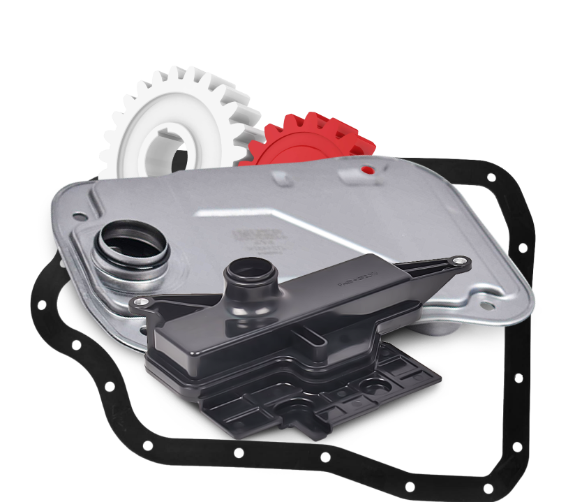

TRANSMISSION FILTERS
AZUMI Filtration Product have developed filters to keep your car's transmission in optimal condition during operation, preventing damage by abrasive elements.
Advantages of AZUMI transmission filters
- Oil flow power maintenance
- Felt filter media provides maximum filtration efficiency with maintaining oil flow throughout its life
- The tightness of the housing prevents pressure loss
- Fiberglass material increases strength and resistance to low temperatures and temperature extremes.
- The filter kit includes: sealing rings, mounting gaskets made of high quality rubber.
- Use of special low-pressure transmission paper with increased tear resistance
